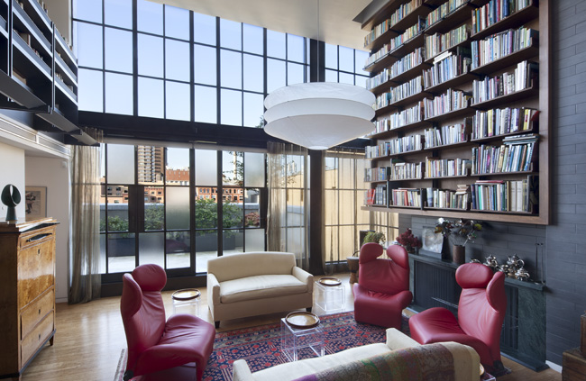
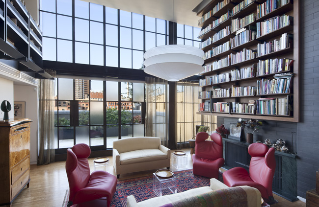
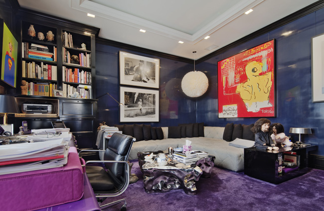
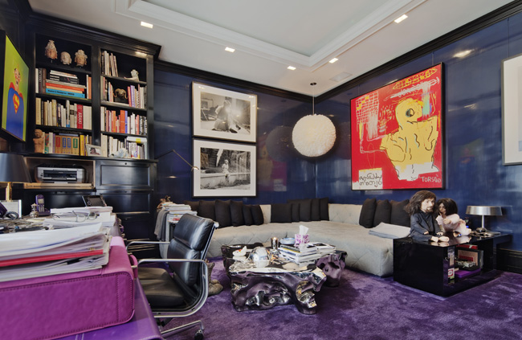
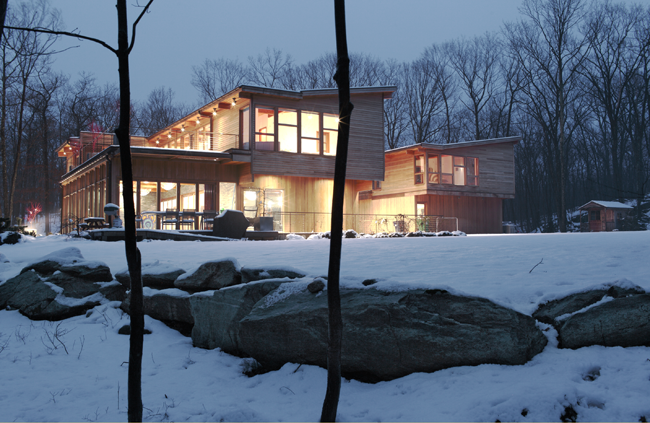
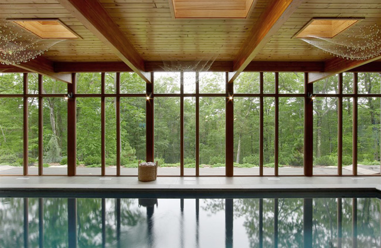
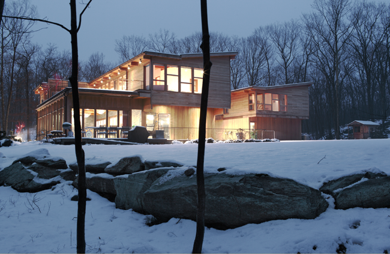
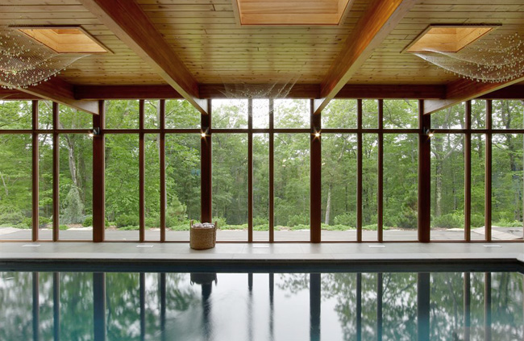

 

 



PROFESSIONAL
Fractal Construction LLC, New York City
Project and Construction Manager
Derek Sanders Inc., New York City
Project Architect
Steves & Borsum Architekten, Cologne, Germany
Student assistant
Tokyu Corporation, Tokyo, Japan
Summer intern
Schlösser Architekten, Cologne, Germany
Student assistant
Veit Petsch, Engelskirchen, Germany
Internship
EDUCATION
NYU School of Continuing and Professional Studies (SCPS), New York City
Construction Management
University of Applied Sciences Cologne, Germany
engineering diploma in architecture in July 07
Universidad de Las Palmas de Gran Canaria, Spain
study abroad